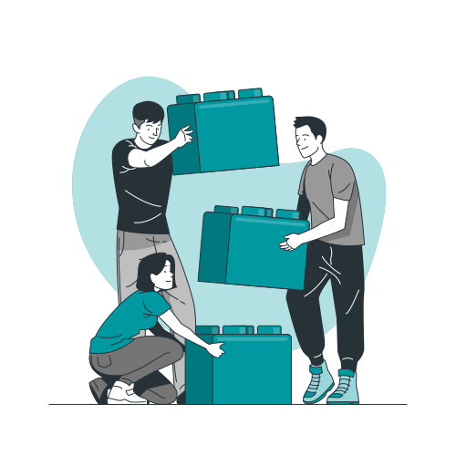

Cross-Compiling ROS 2 Humble to WebAssembly for the Development of a Web Browser Supported Robotics Environment
Isabel Paredes
Contents
1Motivation
2Proposed Solution
3Concept Architecture
4Demonstrations
5Conclusion
6Future Work
Motivation
ROS 2 Limitations:
- Initial setup
- Ease of use
- Accessibility
- Reproducibility

Existing Solutions

ROS 2
RoboStack

Docker

Robot Web Tools
Inspiration
roswasm_suite

ROS On Web
Proposed Solution
Running ROS 2 on the Browser
- Hassle-free setup
- Zero background knowledge
- Fully open-source
WebAssembly

Target Users
U1Beginner

U2Student

U3ROS User

U4Roboticist
User Interface Levels
I1Non-Interactive
I2Minimal
I3Basic
I4Intermediate
I5Advanced

Technical Complexity Levels
C1Middleware replacement
C2Cross-compilation of 1 package
C3Publisher and subscriber
C4Multiple nodes
C5Robot manipulation
C6ROS client libraries in JupyterLite
C7Robot visualization
C8Simulation
C9Development workspace

Methodology

Middleware
Diagram with packages
Demos
Publishers and Subscribers
Publisher
Subscriber
Service Clients and Servers
ROS Client Libraries
LEGO-BOOST Vernie
Web Bluetooth API
Conclusion
- No installation
- Easy to use
- Publicly accessible
- Reproducible
- OS agnostic
- No rosbridge required
Future Work
Client libraries:
- rclpy
User interface:
- JupyterLite
- Zethus
Middleware:
- Action services